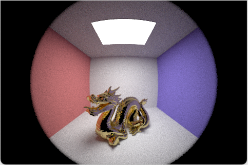
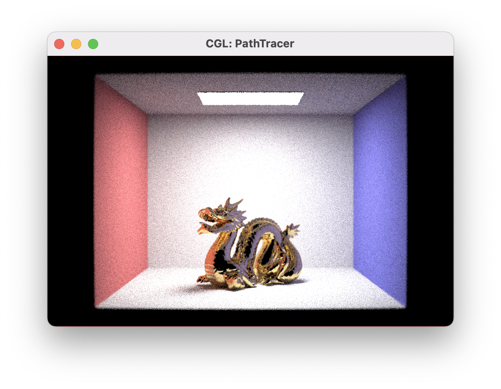

|
|
|
Amy Doo, Jordan Bell, Katlyn Ho, Su Latt Phone
Our project adds functionality to the ray tracing engine that will allow it to render images as if the camera lens was composed of physical lenses rather than an approximation of lenses. We also added a number of new camera features that model the abilities and restrictions of a physical camera: the ability to autofocus on a part of an image using an iterative contrast-based algorithm that uses a heuristic to identify when the image is most in focus, a technique to increase the exposure of the image using post-production, and adding a togglable flash to the image.
To build a basic working camera, ray tracing was utilized. Lenstester is a debugging tool that we implemented to make sure that the rays refracted properly through a lens system. It is important to be able to go both forwards and backwards through the lenses, as we need to be able to calculate the close focal point and infinity focal point for our lens system.
Working alongside these tracing functions, we have Lens and LensCamera functions that are essential to help with setting lens parameters, setting focus depth, sampling from the back of the lens that is nearest to the sensor, and generating a ray from the sensor towards the point sampled from the back of the lens nearest to the sensor and tracing this ray through the lens.
The set_focus_params() method calculates infinity focus, near focus, and focal length based on the thick lens approximation and uses the forward and backward ray tracing methods.
Using the ray-plane intersection equation, the intersection of the resulting refracted ray through the lens and the z axis can be found to determine the focus parameters.
The implementation of the focus_depth() method allows for the user to blur or sharpen the rendered image. It computes the conjugate of a ray
starting at the given sensor depth and traces a ray originating from the sensor depth on the z axis through the lens using the trace() function implemented in Lenstester. The intersection of the resulting refracted ray with the z axis gives the final value.
For the implementation of back_lens_sample() function, first of all, a fixed z-coordinate was calculated; the z-coordinate is fixed because the
function is specifically sampling a point from the back of the lens that is the closest to the sensor, so this is fixed. Then, for the sampler,
at first, UniformGridSampler2D was used, because only the x-coordinate and y-coordinate were needed. However, the mistake was realized because
this samples the points from a 2D grid (square) instead of a 2D circle, certain points sampled were out of bounds on a circle. Hence,
UniformHemisphereSampler3D is used to sample a point in a hemisphere. However, since the z-coordinate is already fixed, only the x-coordinate and
the y-coordinate are selected from the sampler to construct the function’s sampled point.
For the implementation of generate_ray() function, the main purpose is to generate a ray from the sensor pointing toward a point on the back of the lens that is nearest to the sensor, and trace it through the lens. First, the sensor’s position is calculated using the current screen aspect ratio and modeled
as a standard “full-frame” sensor. Then, we create a ray using the sensor’s position as the origin of the ray and its direction is constructed with a
vector from the sensor position pointing toward the point sampled using the define back_lens_sample() function. Then, this ray is traced through the lens using the forward tracing function that was defined. If the ray made it through the lens, the ray is converted into world view. Otherwise, a ray that
won’t hit anything is returned.
We based our Auto-Focus algorithm algorithm off of the older spec, but extended it and tested different heuristics in order to get the best results. The algorithm works by selecting a small portion of the scene and iteratively testing different sensor plane locations. At each location we re-render the small portion, then calculate a heuristic from the image that measures the amount of contrast. After iterating over the entire range we then set the sensor to the position that resulted in the highest amount of contrast.
The bounds of this iteration are the infinity focal point plane and near focal plane that were determined previously, as those are the furthest the sensor plane can ever move.
The step size of this iteration is made to be small enough that the largest possible circle of confusion for an object that we are trying to focus on is smaller than a pixel, ensuring that it can be in perfect focus. To do this we used the equation for circle of confusion from lecture:
C / A = |Z_s - Z_i| / Z_i
We plug in the height of a pixel for C, the current lens aperture size for A, and then we know that our step size should be at most 2 * |Z_s - Z_i|
as this ensures that it will test within the |Z_s - Z_i| on either side. Solving for that we get:
Step size = 2 * C * Z_i / A
Z_i is unknown as that would require us to know the optimal distance for the sensor plane, but to make sure that we have a small enough step size we
use the smallest possible Z_i, the infinity focal plane. We tested different variations of this algorithm but decided anything other than iterating
over the whole range was not robust enough. In theory the contrast detecting heuristic should rise to a peak and then fall off afterwards, but none
of the heuristics we tested had smooth enough data to use any peak finding algorithms as when tested on different locations and images they had a
high probability to find false peaks.
We tested four different heuristics:
The next three heuristics all first convert the image to grayscale by summing the RGB channels weighted by human perception.
We decided to use 4. as it provided consistent results when using large and small images and when there was even a small amount of contrast in the selection. 1 was similar but performed worse overall, 2 struggled when there was less contrast and also required precise tuning, and 3 only worked when the edge was a certain orientation. Using 4 we could use an area on the order of 6x6 pixels to focus on, meaning that the algorithm ran very quickly, 30 sec to 1 min depending on the lens.
Another feature we added was flash, which can be toggled on and off with a keyboard command. In order to implement flash, we had to add a light source that was at the same position and pointing in the same direction as the camera. Since the scenes we had were already bright, adding flash to them wouldn’t have made an appreciable difference, so we modified an existing scene to have no light coming from any place other than the flash for use in rendering images to show flash working. Figuring out how to add and modify lights in a scene was mainly trial and error after skimming the COLLADA spec for a better idea of how dae files work. We tried using different types of lights for the flash and found that using an area light was most realistic.
The final feature that we implemented adds a little post-production editing directly to the scene where auto exposure can be toggled on and off.
When implementing this, the equation and values by which to scale the RGB pixel values took a lot of research and trial and error to find what
worked best. Multiplying instead of adding certain values would lead to drastically different outputs that would change things such as exposure,
saturation, and contrast in the image. The resources and suggestions for changing just the exposure of the image didn’t turn out as expected,
but we were able to find a tonemap() method in the given code that does edit the exposure of the RGB pixels in the sample buffer.
new RGB value = (old RGB value / (avgBrightness * 2)) ^ 0.5
avgBrightness is the average illuminance of the pixels. This final equation is an adaptation of the code in tonemap() and was derived after testing of different scaling values.
Seeing how increasing/decreasing, adding/subtracting, multiplying/dividing, etc. changed the image helped in narrowing down the scaling equation.
The first major problem we encountered occurred was when interfacing with an older version of pathtracer. Since our project is based off of an old version of CS184 project, there are numerous differences between the old project spec and our current ones that required tweaking to get things setup.
The most major two differences were that the older spec used a Spectrum struct to represent light rather than a Vector3D, and that the older spec did not use an alpha channel when displaying colors. We had to go through the project and fix all of these issues before it would build.
There were also some struggles with building as the project only builds on Mac and Linux, but since most of our group members had a Mac, this was not a major obstacle as the other members could use a VM.
Another problem we had was a large amount of noise when rendering with the fisheye lens. We determined that this was because it is much more for a ray to not make it all the way through the lens, as it refracted at much sharper angles. To fix this issue, whenever we call the generate_ray function we continue attempting to generate a ray until one makes it through the whole lens configuration, with an upper limit as certain locations cannot generate rays that pass through. The last step is to return the number of rays checked and add that to the total samples when dividing the summed returned radiance, as otherwise we are not weighting the returned rays correctly.
From this project we learned about the limitations of the single lens model, and the differences between it and a multi-lens system. For autofocus, we found that finding a good heuristic is a difficult task for all scenes, and we thought that it could be a possible area for Machine Learning. Finally, we found that it is more challenging to implement our own ideas, but the end results are more satisfying and rewarding.
We start with our four lenses, both unfocused and then autofocused. We manually moved the camera before rendering so that the dragon takes up about the same amount of space.
|
|
|
|
|
|
|
|
|
|
|

|
Here are some images diplaying our flash capabilities.
|
|
|
|
|
|
|
|
And finally here are images showing off the auto-exposure

|

|
|
|
|
|
|
|
|
|
|
These are images rendered with no light sources other then the flash, using auto-exposure to make them seem brighter. We can tell it is effective as the final image looks almost identical to when there is a larger light source.
|
|
|
For the proposals, slides, reports, and presentations, each team member contributed and wrote about their respective part of the code.
Katlyn Ho
She worked on the helper functions, set_focus_params() and focus_depth(), for Lens and LensCamera and auto-exposure.
Jordan Bell
Worked on setting up the original code and fixing any issues with the older spec. Helped to debug the lenstester to get it working, and did
the work to implement the contrast-based autofocus.
Amy Doo
Helped debug lenstester. Worked on flash.
Su Latt Phone
Implemented the Lens and LensCamera helper functions back_lens_sample() and generate_rays().